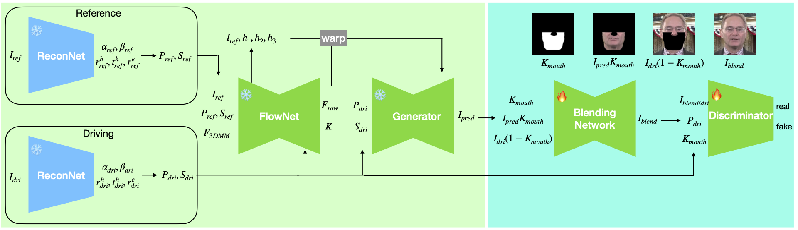
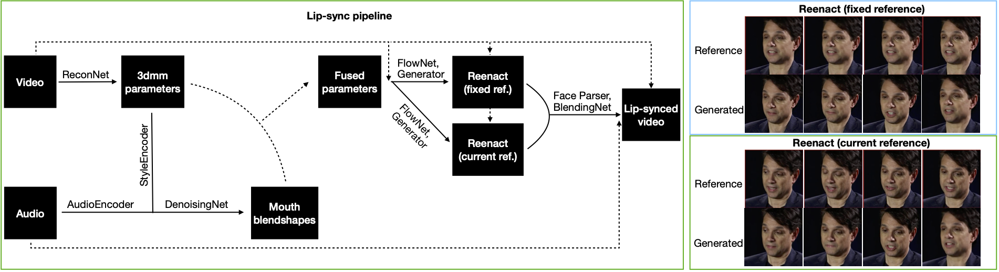

JOLT3D: Joint Learning of Talking Heads and 3DMM Parameters with Application to Lip-Sync
Once a disentabled blendshape systen is obtained, you can change just the mouth region to obtain lip-synced videos.
Lip-synced samples from HDTF dataset:
In this work, we make 3DMM great again for talking head synthesis by jointly learning a face reconstruction model and a talking head synthesis model. This enables us to obtain a FACS-based blendshape representation of facial expressions that is optimized for talking head synthesis. This contrasts with previous methods that fit 3DMM parameters on 2D landmarks, or rely on pretrained face reconstruction models. Not only does our approach increase the quality of the generated face, but it also allows us to take advantage of the blendshape representation to modify just the mouth region for the purpose of audio based lip-sync. To this end, we propose a novel lip-sync pipeline that, unlike previous methods, decouples the original chin contour from the lip-synced chin contour and reduces flickering near near the mouth.
We first jointly train the ReconNet (a model that predicts the 3DMM parameters) and the Generator.
We label talking face videos using the ReconNet. We use the audio and blendshape pairs to train the Audio-to-Blendshape model.
We train a simple UNet that blends the generated face into the original video.
Our lip-sync pipeline.
Since the ReconNet is jointly optimized with the Generator, our method captures the facial motion much better than other methods that uses a pretrained ReconNet or fits the 3DMM parameters to 2D landmarks. Below, we compare our method with other methods that utilize 3DMM. From left is the ground truth (driving face), Real3D-Portrait, HeadGAN, FADM, and our method. Note that the first frame is used as the reference frame in all videos. Notice that our method produces realistic (video consistent) teeth when the teeth are visible in the reference frame.
Our model can be used for cross-reenactment by transferring all the 3DMM parameters except for the identity parameter. From left is the driving video, reference face, Real3D-Portrait, HeadGAN, FADM, our method.
Our lip-sync pipeline allows us to change just the mouth region of the video. From left is the original video, LatentSync, MuseTalk, JoyGen, and our method.
Acknowledgements: This page was created using template from DreamBooth.